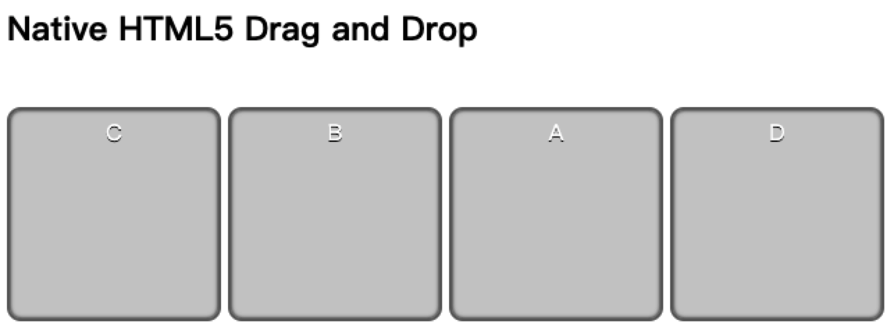
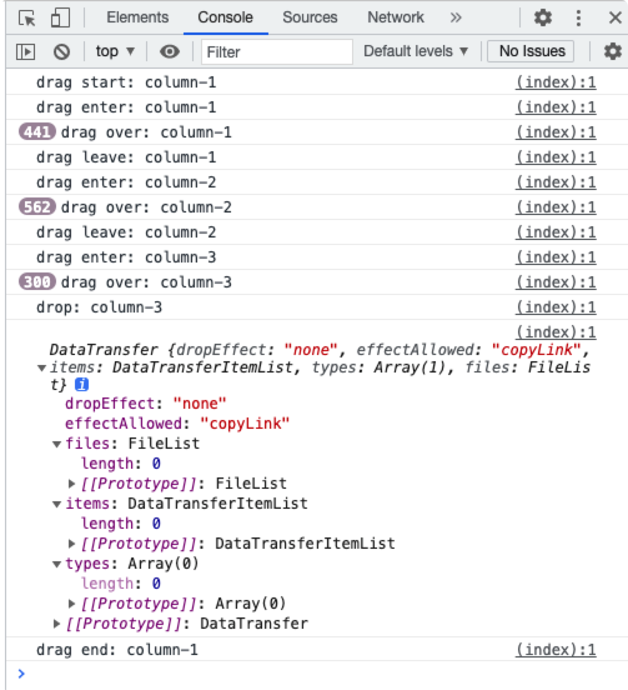
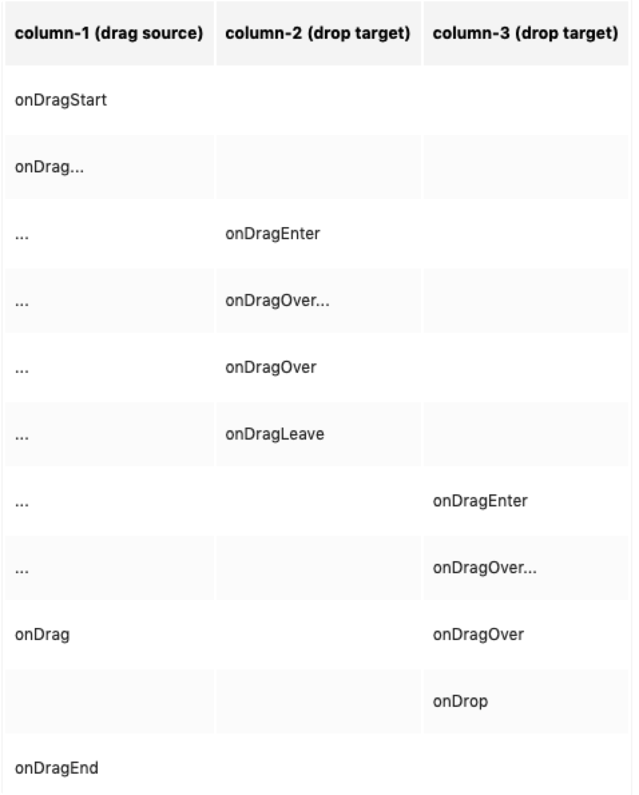
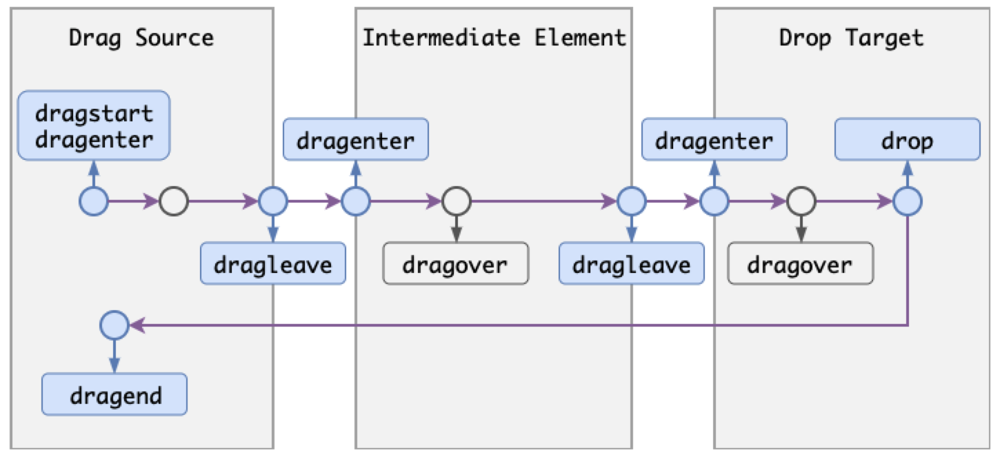
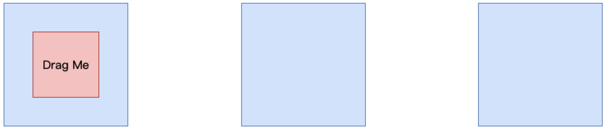
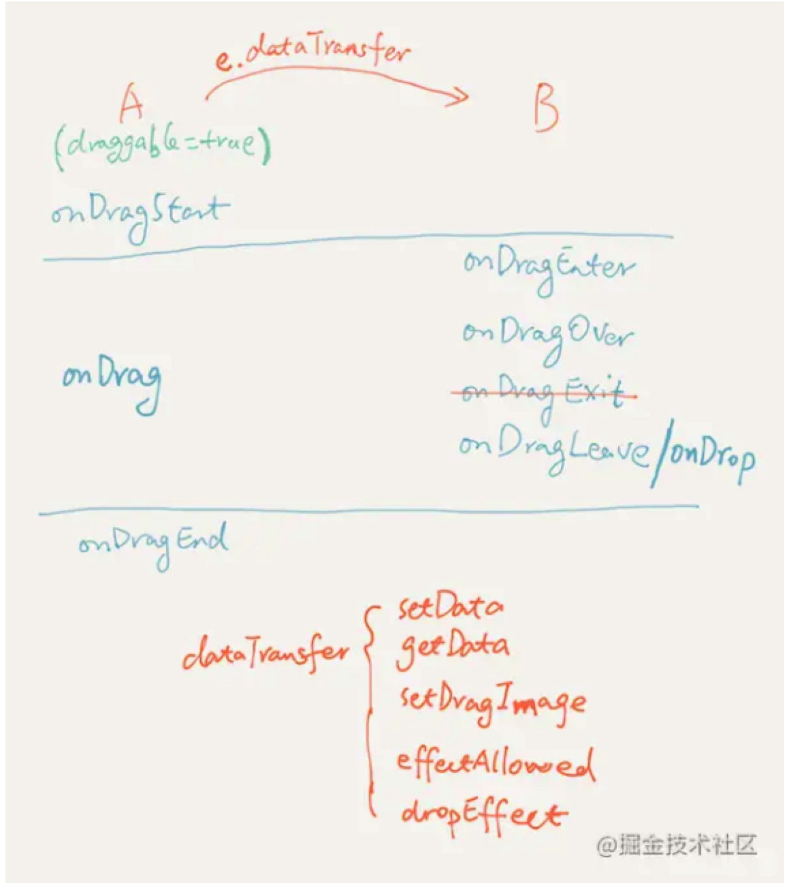
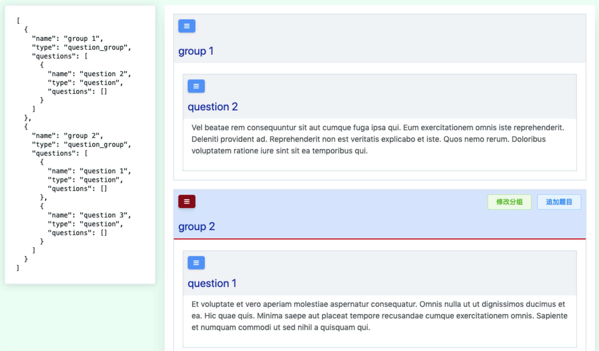

前端拖拽（DnD）交互技术原理分析与实践

目录
协作式系统中引入”拖拽“交互功能是非常必要的技术措施，HTML 5 已经把 DnD 标准化，现在我们能“轻易”地为几乎任意元素实现拖放功能。只是它的难度取决于你对 API 的理解程度，而官方文档并不好懂。本文介绍Drag&Drop技术的相关基础知识和开发实践方法。
原生DnD
原生 API 允许我们给元素添加 draggable="true" 属性来定义元素可被拖放。也有一些元素被默认为可拖放的，无需再添加属性（比如 images 或 text）。默认情况下，当可拖动元素被拖动时，只有 form类元素，如input，才能作为接受它们放入的容器。原生 API 也能接受从 OS 中浏览器的外部区域，拖入文件到你的置入区域。几乎所有优秀的内容管理系统都能提供内容的拖拽上传。目前原生 API 并不支持移动设备。
事件检测



拖拽生命周期
拖动 Source Element，途中经过 Intermediate Element，最终进入 Target Element 并松开鼠标，则路径上会触发的事件如下图所示：

Drag and drop 的整个生命周期如上所示，在整个周期中，有 drag source 和 drop target 两类 component，需要将 drag source 的 draggable 属性置为 true，才能被拖动 (对 drop target 没有要求)，两者之间通过 event.dataTransfer (后面会详细讲一下 dataTransfer 的使用) 或者全局变量传递数据。
整体生命周期序列如下
dragstart -> drag -> dragenter -> dragover -> dragleave -> drop -> dragend
相关事件说明
| 元素对象 | 事件 | 说明 | 备注 | 使用方法 |
|---|---|---|---|---|
| source | 被拖拽元素 | |||
| dragstart | 当被拖拽元素开始被拖拽时触发。 | [a]. event.dataTransfer的大部分设置均在这里配置 [b]. 若调用event.preventDefault()则会阻止拖拽行为，导致后续的拖拽事件不被触发 [c]. 触发dragstart事件后，其他元素的mousemove, mouseover, mouseenter, mouseleave, mouseout 事件均不会被触发了 | 该事件在拖动一发生立即被触发。应该在该事件被触发时告诉 API 我们想要拖动的元素，以及设置其他值。使用 setData() 方法来设置你要保存的数据，为 draggable 元素设置effectAllowed 属性，以及用 setDragImage() 来定义 draggable helper |
|
| drag | 当被拖拽元素被拖拽时触发 | 该事件将在拖动过程中持续被触发。触发次数和浏览器有关。它在准确定位被拖动元素的位置时将非常有用。一般情况下我们不关心 | ||
| dragend | 当拖拽行为结束后触发 | 该事件在 draggable 对象被 drop 时即刻触发（无论被 drop 在哪里），而且往往紧随在 drop 区域的 drop 事件之后被触发。你可以利用该方法来重置之前给拖动中状态设置的样式，或者执行其他的清除工作。dragend 事件能够获取被draggable 对象，所以你可以在拖动结束之后执行运算（比如查询新加入的元素来判断 drop 事件是否成功，然后移除之前的 draggable 对象）。 |
||
| intermediate | 经过的中间元素（含起始元素和目标元素） | 此类事件只能在你指定为 drop target 的对象上被触发（或者本身即为 drop target 的对象，如 form 对象） | ||
| dragenter | 当被拖拽元素经过中间元素时触发 | 该事件仅在 draggable 对象进入 droppable 区域时被触发一次。只有当50%以上的 draggable 对象进入 drop 区域中才会被触发。 | 之前在 dragstart 事件中设置的数据，可以用 types 属性来获取其数据类型的列表。但你只能得到数据类型，无法获得数据值。此时你可以调用 contains 方法来查看某一特定类型的数据是否被创建。具体通过 event. dataTransfer. types.contains(type) 方法实现。例如，你可以用它来确保某些数据已经被设置为text/html类型。通过设置 classes 或者触发行为，你可以得知 draggable 对象进入了 drop 区域（一种常用做法是给drop 区域激发前后设置不同的样式）。 |
|
| dragover | 当被拖拽元素在中间元素上移动时触发 | [a]. 可以在这里设置dropEffect的值，事件的默认行为是将dropEffect设置为none [b]. 该事件是被拖拽元素在目标元素上移动一段时间后才触发 [c]. 事件的默认行为是不允许被拖拽元素在其他元素上释放或放置（即无法触发 drop 事件），需要通过 event.preventDefault() 来阻止默认行为才能触发后续的 drop 事件。 | 该事件基本上与 dragenter 相同，但是他在 draggable 对象位于 drop 区域中时仍会被持续触发。当你想确定 draggable 的具体位置时，该事件是最好的选择（因为它会持续被更新） |
|
| dragleave | 当被拖拽元素离开中间元素时触发 | 常用于移除在 dragenter 和 dragover 事件发生时添加的样式，当 draggable 对象不与 drop 区域重叠时，就会触发该事件。 |
||
| target | 目标元素 | |||
| drop | 当被拖拽元素在目标元素上，而且释放鼠标左键时触发 | [a]. 对于外来的被拖拽元素（超链接、文件、图片源）， drop 事件的默认行为是浏览器将当前页面重定向到被拖拽元素所指向的资源上 [b]. 对文档内部的被拖拽元素，IE10+和Chrome下的默认行为是不作为，而FF得默认行为是新打开一个文档用于访问被拖拽元素所指向的资源 | 在该事件中，你可能会需要用 getData() 方法来获取信息。 |
启用拖拽效果
当某一事件被触发后，我们可以捕获一个对象（我们称之为 event）。这个对象包含了更多关于该事件本身的信息，同时使你能获取 dataTransfer 对象，用来设置大部分方法和属性。
html
<div id="drag" draggable="true" style="width:100px;height:50px;background-color:red;">
test
</div>
js
var drag = document.getElementById('drag');
drag.onselectstart = function(){return false;};
// FF下拖拽时，默认不会生成一个被拖拽元素的阴影并跟随鼠标移动
// 需通过e.dataTransfer.setData来启动该效果
drag.ondragstart = function(e){
e.dataTransfer.setData('text', e.target.innerHTML);
};
要点说明：
-
为触发拖拽的元素添加 draggable=“true” 特性，用于启动HTML5的DnD功能（即元素的 dragstart 事件可被触发）；
-
在FF下即使添加 draggable=“true” 特性，但仅仅会触发 dragstart 事件，但DnD功能并没有被完全打开（拖拽元素时没有任何视觉效果），需要调用 event.dataTransfer.setData(‘Text’,'') 彻底开启DnD功能。
-
在Safari4下则需要借助CSS规则来启动DnD功能， [draggable=true]{ -webkit-user-drag: element; }
draggable属性说明
作用：用于指定标签是否可被拖拽
属性值范围如下：
-
true ，表示可被拖拽
-
false ，表示不可被拖拽
-
auto ，默认值，img和带href属性的a标签则表示可拖拽，其他标签表示不可被拖拽
-
其他值，表示不可被拖拽
数据传输对象
event.DataTransfer 对象用于在配置拖拽行为效果，并且在拖拽过程的各事件间传递数据信息。它存储在事件对象当中。数据信息的数据类型被限定为字符串和文件类型
属性
| 属性名 | 取值 | 说明 |
|---|---|---|
| effectAllowed | 用于配置拖拽操作过程中鼠标指针的类型以便提示用户后续可执行怎样的操作 | |
| copy | 限定dropEffect的属性值为copy，否则会鼠标指针为禁止样式 | |
| link | 限定dropEffect的属性值为link，否则会鼠标指针为禁止样式 | |
| move | 限定dropEffect的属性值为move，否则会鼠标指针为禁止样式 | |
| copyLink | 限定dropEffect的属性值为copy和link，否则会鼠标指针为禁止样式 | |
| copyMove | 限定dropEffect的属性值为copy和move，否则会鼠标指针为禁止样式 | |
| linkMove | 限定dropEffect的属性值为link和move，否则会鼠标指针为禁止样式 | |
| all | 允许dropEffect的属性值为任意值 | |
| none | 鼠标指针一直为禁止样式，不管dropEffect的属性值是什么 | |
| uninitialized | 没有限定dropEffect属性的值，效果和 all 一样 | |
| dropEffect | 用于设置目标元素将执行的操作，若属性值属于 effectAllowed 范围内，则鼠标指针将显示对应的指针样式，否则则显示禁止的指针样式 | |
| copy | 被拖拽元素将被复制到目标元素内，若属于 effectAllowed 范围内时，则鼠标指针显示复制的样式，否则则显示禁止的指针样式 | |
| link | 被拖拽元素将以超链接的形式打开资源，若属于 effectAllowed 范围内时，则鼠标指针显示超链接的样式，否则则显示禁止的指针样式 | |
| move | 被拖拽元素将被移动到目标元素内，若属于 effectAllowed 范围内时，则鼠标指针显示移动的样式，否则则显示禁止的指针样式 | |
| none | 被拖拽元素不能在目标元素上作任何操作，一直显示禁止的指针样式。除了文本框外其他元素的默认值均为none | |
| items | 数据类型为DataTransferItemList，存储DataTransfer对象中所有的数据项 | |
| files | 数据类型为FileList。该属性包含了已经被设置的本地文件的列表。 | |
| types | 数据类型为DOMStringList，存储DataTransfer对象中所有数据项的数据类型 |
方法
| 方法名 | 说明 | 备注 | 使用方法 |
|---|---|---|---|
| setData(format, data) | 用于添加数据，一般 format 对应于 MIME 类型字符串，常见的有 text/plain、text/html 及 text/uri-list等，但同时也可以是任意自定义的类型 |
data 只能是 string 或 file |
在拖放过程中你将会需要传递数据类型和数据本身，但是这些需要在 dragstart 事件触发时就被设置，否则将会失败，并且只有在之后的 drop 事件期间这些值才能被获取到。 |
| getData(format) | 用于获取数据 | 该方法只能用于 drop 事件 |
|
| clearData(format) | 用来清除使用 setData 设置的所有数据 |
只能用于 dragstart 事件中 |
你需要制定需要清除的数据类型（例如 text/html 或 URL） |
| setDragImage | 可以设置 dragging 开始时呈现的图像 | 默认情况下，当你进行拖动时，用户将会看到一个被拖动对象的半透明图像。使用该方法，你可以自己定义此时显示的图像 |
基本使用过程
目标效果

基本过程

加上
draggable="true"属性
<div id="drag-container">
<div class="dropzone">
<div id="draggable" draggable="true">
Drag Me
</div>
</div>
<div class="dropzone"></div>
<div class="dropzone"></div>
</div>
监听dragstart，在拖起元素让原始的元素变成半透明
draggable.addEventListener("dragstart", (ev) => {
ev.target.style.opacity = ".5";
});
监听
dragend, 在拖动结束后还原透明度
draggable.addEventListener("dragend", (ev) => {
ev.target.style.opacity = "";
});
监听目标对象的事件，使目标区域边框变成虚线，以示意我们可以放入元素
let dropzones = document.querySelectorAll('.dropzone');
dropzones.forEach((dropzone) => {
dropzone.addEventListener('dragenter', (ev) => {
ev.preventDefault();
dropzone.style.borderStyle = 'dashed';
return false;
});
dropzone.addEventListener('dragover', (ev) => {
ev.preventDefault();
return false;
});
dropzone.addEventListener('dragleave', (ev) => {
dropzone.style.borderStyle = 'solid';
});
});
说明：
- 在
dragenter与dragover里我们调用了ev.preventDefault()，事实上几乎所有元素默认都是不允许 drop 发生的，这里调用ev.preventDefault()可以阻止默认行为。- 在
dragenter中我们通过dropzone变量来修改样式而不是ev.target，你可能觉得ev.target指向的是目标 B 元素，然而它指向的是源元素 A。- 我们在
dragenter而不是dragover中修改样式，是因为dragover会触发太频繁了
初始化传输对象
draggable.addEventListener('dragstart', (ev) => {
ev.target.style.opacity = ".5";
// 设置 ID
ev.dataTransfer.setData('text/plain', ev.target.id);
});
监听 drop，获取数据
dropzones.forEach((dropzone) => {
dropzone.addEventListener('drop', (ev) => {
ev.preventDefault()
ev.target.style.borderStyle = 'solid';
// 获取 ID
const sourceId = ev.dataTransfer.getData('text/plain')
ev.target.appendChild(document.getElementById(sourceId))
})
});
重要说明：
dataTransfer的内容只在drop里可读，所以如果你想在dragEnter或dragOver中通过dataTransfer.getData()返回的内容来决定一个目标元素是否允许放置是不可行的。其它的事件里只能通过一个个检查dataTransfer.items里的 type 来获取已经设置的format而无法获取data。drop与dragend事件是顺序触发的，但在dragend里没有办法知道drop事件是否已经触发
封装组件
常见封装组件(Vue)
| 名称 | 地址 | star | update | 备注 | 推荐度 |
|---|---|---|---|---|---|
| Vue.Draggable | https://github.com/SortableJS/Vue.Draggable | 15.8k | 3m/5y | Vue component (Vue.js 2.0) or directive (Vue.js 1.0) allowing drag-and-drop and synchronization with view model array.Based on and offering all features of Sortable.js | v |
| Vue-smooth-dnd | https://github.com/kutlugsahin/vue-smooth-dnd | 1.2k | 2y/3y | fast and lightweight drag&drop, sortable library for Vue.js with many configuration options covering many d&d scenarios.This library consists wrapper Vue.js components over smooth-dnd library. | |
| Vue-grid-layout | https://github.com/jbaysolutions/vue-grid-layout | 4.9k | 7m/5y | vue-grid-layout is a grid layout system, like Gridster, for Vue.js. Heavily inspired by React-Grid-Layout | |
| Easy-DnD | https://github.com/rlemaigre/Easy-DnD | 242 | 7d/2y | Easy-DnD is a drag and drop implementation for Vue.js 2 that uses only standard mouse events instead of the HTML5 drag and drop API, which is impossible to work with. Think of it as a way to transfer data from some components to others using the mouse or support for a mouse assisted copy/cut - paste. It also allows for lists to be reordered by drag and drop. | v |
经过试用前两个，发现vue.draggable更加灵活，尤其是嵌套结构可以通过数据层次来定义深度。同时，easy-dnd似乎设计了更多的特殊场景，也值得参考。vue-smooth-dnd的强项是提供了更好的演示系统。
VueDraggable
Vue.Draggable是一款基于Sortable.js实现的vue拖拽插件。支持移动设备、拖拽和选择文本、智能滚动，可以在不同列表间拖拽、不依赖jQuery为基础、vue 2过渡动画兼容、支持撤销操作。其底层的Sortable.js基于H5 原生 DnD实现。
基本用法示例
<draggable v-model="list">
<transition-group>
<div v-for="element in list" :key="element.id">
{{element.name}}
</div>
</transition-group>
</draggable>
属性
| 属性名称 | 类型 | 默认值 | 作用 | 备注 |
|---|---|---|---|---|
| value | Array | null | 用于实现拖拽的list，通常和内部v-for循环的数组为同一数组 | |
| list | Array | null | 效果同value的。和v-model不能共用 | |
| tag | String | div | draggable 标签在渲染后展现出来的标签类型 | |
| emptyInsertThreshold | Number | 5 | 拖动时，鼠标必须与空的可排序对象之间的距离 | |
| clone | Function | null | 返回值为true时克隆，可以理解为正常的拖拽变成了复制。当pull:‘clone时的拖拽的回调函数’ | |
| move | Function | null | 如果不为空，这个函数将以类似于Sortable onMove回调的方式调用。返回false将取消拖动操作。 | |
| componentData | Object | null | 用来结合UI组件的，可以理解为代理了UI组件的定制信息 | |
| options | Object | null | draggable 列表配置项（参考sortable.js配置） | 建议使用v-bind属性进行配置 |
| group | String/Array | 用于分组，同一组的不同list可以相互拖动 | ||
| sort | boolean | 定义是否可以拖拽 | ||
| delay | number | 定义鼠标选中列表单元可以开始拖动的延迟时间 | ||
| disabled | boolean | 定义是否此sortable对象是否可用 | ||
| animation | number | 动画时间 单位:ms | ||
| handle | selector | 使列表单元中符合选择器的元素成为拖动的手柄，只有按住拖动手柄才能使列表单元进行拖动 | ||
| filter | selector | 定义哪些列表单元不能进行拖放，可设置为多个选择器，中间用“，”分隔 | ||
| preventOnFilter | boolean | 当拖动filter时是否触发event.preventDefault() 默认触发 | ||
| draggable | selector | 定义哪些列表单元可以进行拖放 | ||
| ghostClass | selector | 当拖动列表单元时会生成一个副本作为影子单元来模拟被拖动单元排序的情况，此配置项就是来给这个影子单元添加一个class | ||
| chosenClass | selector | 目标被选中时添加 | ||
| dragClass | selector | 目标拖动过程中添加 | ||
| forceFallback | boolean | 如果设置为true时，将不使用原生的html5的拖放，可以修改一些拖放中元素的样式等 | ||
| fallbackClass | string | 当forceFallback设置为true时，拖放过程中鼠标附着单元的样式 | ||
| dataIdAttr | selector | data-id | ||
| scroll | boolean | 当排序的容器是个可滚动的区域，拖放可以引起区域滚动 | ||
| scrollFn | function | 用于自定义滚动条的适配 | ||
| scrollSensitivity | number | 就是鼠标靠近边缘多远开始滚动默认30 | ||
| scrollSpeed | Number | 滚动速度 |
事件
| 事件名称 | 参数 | 说明 | 绑定方式 |
|---|---|---|---|
| start(e) | function（{to,from,item,clone,oldIndex,newIndex}) | @ | |
| add(e) | function（{to,from,item,clone,oldIndex,newIndex}) | @ | |
| remove(e) | function（{to,from,item,clone,oldIndex,newIndex}) | @ | |
| update(e) | function（{to,from,item,clone,oldIndex,newIndex}) | @ | |
| end(e) | function（{to,from,item,clone,oldIndex,newIndex}) | @ | |
| choose(e) | function（{to,from,item,clone,oldIndex,newIndex}) | @ | |
| sort(e) | function（{to,from,item,clone,oldIndex,newIndex}) | @ | |
| filter(e) | function（{to,from,item,clone,oldIndex,newIndex}) | @ | |
| clone(e) | function（{to,from,item,clone,oldIndex,newIndex}) | @ | |
| move(e, originalEvent) | e.draggedContext, e.relatedContext | //e对象结构 draggedContext: 被拖拽的元素 index: 被拖拽的元素的序号 element: 被拖拽的元素对应的对象 futureIndex: 预期位置、目标位置 relatedContext: 将停靠的对象 index: 目标停靠对象的序号 element: 目标的元素对应的对象 list: 目标数组 component: 将停靠的vue组件对象 | :move= |
主要问题：空列表无法拖入项目的解决方案
<draggable
:list="questions"
class="list-group"
></draggable>
<style>
.list-group:empty {
padding:1rem;
text-align:center;
background-color: lightgray;
}
</style>
实例效果图
